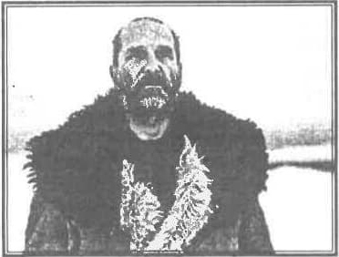
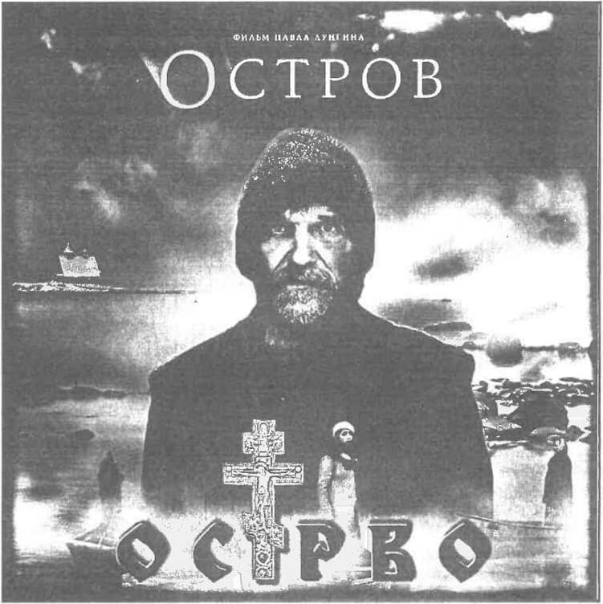
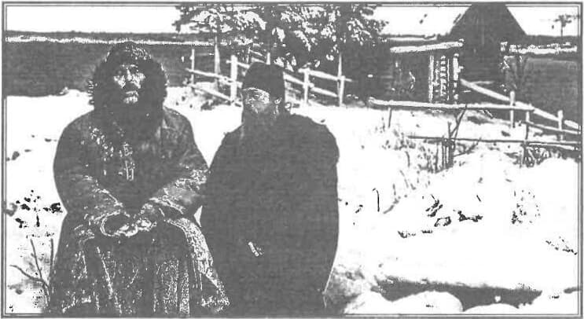

Maica Ecaterina pregătește alte apariții editoriale. Acesta este un fragment dint-o lucrare ce va vedea lumina tiparului în curând.
Izvorâtă dintr-un spirit „bavarde”, intelectualizat, actualizat și de foarte multe ori monopolizat de partea adversă, primul comentariu despre EVENIMENTUL OSTROV, mi-a lăsat chiar de la primele zile ale apariției pe piață, un gust amar de „produs indefinit', de conversație, de dragul de a ne auzi vorbind… încât am luat decizia, acum la mai bine de doi ani de la apariția cărții să public o ERATĂ. Mulți se vor întreba, pe bună dreptate, de ce nu am spus atunci, în timpul acelei conversații aceste opinii ale mele.
Desigur nu pentru că ele, opiniile, nu erau formate… poate chiar erau prea formate… și la început din respect față de titluri ca profesor-doctor conferențiar universitar… apoi din jenă și rușine fată de erorile (sper eu - neintenționate) ale unui „intelectual de marcă al spiritualității ortodoxe”. ATUNCI MAI MULT AM TĂCUT!
Dar uneori, TĂCEREA E O APROBARE. De aceea aș vrea să exprim mai pe larg ce consider eu (cea venită din adâncul iadului) că poate reprezenta acest film și implicit ortodoxia pentru mântuirea lumii.
Cei douăzeci de ani petrecuți în lumina reflectoarelor de pe scenele teatrelor și platourile de filmare din România, ca și următorii douăzeci de ani petrecuți în Lumina Sfinților Părinti ai Ortodoxiei, prin posturi, rugăciuni în bisericile lumii: România, Țara Sfântă, Sinaiul, mi-au dat putere și înțelepciune să văd și să înțeleg, că pentru a ne păstra sufletul și ortodoxia nealterate, trebuie să fim următori „nebuniei sfinte” ai unora ca Atet Anatolie — personajul principal din filmul Ostrov.
Ca orice acțiune care sare din canoanele obișnuite și acest film a avut parte de comentarii pro și contra, care desigur au căzut de multe ori în desuetudine sau „aroganță duhovnicească”. S-a spus, de exemplu, că pentru călugări nu prezintă nici o noutate (că ei… ehhehe… de când trăiesc așa și așa) iar pentru mireni tot ce e prezentat acolo e smintitor și de neînțeles. Pentru rugăciunile Sfinților Părinți, care de aproape 2000 de ani au apărat în fel și chip ortodoxia, voi încerca să aduc în fața celor interesați argumentele pozitive ale acestui FILM - EVENIMENT și să las să se înțeleagă că adevărul este acesta: nici călugării nu sunt atât de înduhovniciți încât să nu mai aibă ce învăța… și nici mirenii nu sunt atât de căzuți încât să nu aprecieze și să recunoască sfințenia sau impostura.
Pe vremea când lucram în cinematografie și trebuia să fac parte din echipele de filmare care prezentau pe ecranele cinematografelor românești ședințe de partid, adunări de CAP sau defecțiuni majore ale motoarelor din fabricile și uzinele comuniste, am fost în același timp pot spune și binecuvântată, să văd, să înțeleg, și să apreciez la superlativ opera cinematografică a poporului rus, culminând cu cel ce avea să fie încununarea școlii de film rusesc — Andrei Tarkovski și capodoperele sale: Oglinda, Călăuza, Andrei Rubliov, Solaris.
Am fost la vremea aceea uluită, șocată, că existau în plin comunism astfel de capodopere… și mi-am pus mii de întrebări la care atunci nu am găsit nici un răspuns - ținând cont și de păgânismul în care înota sufletul meu… dar răspunsul a venit abia după douăzeci de ani și iată un crin bine mirositor a apărut în lucrarea omului de slăvire a lui Dumnezeu: „Ostrov” al lui Pavel Lunghin, ca o sinteză, ca o încununare a tot ceea ce au făcut predecesorii lui în arta cinematografică. Dar și mai mult… este strigătul societății noastre instituționalizate, robotizate, desacralizate, dar și modelul de „nebunie” roditoare, aducătoare de mângâieri divine și de respect uman… căci iată, secvența finală cu barca ce poartă sicriul și cortegiul funerar, iar crucea (pe care în mod simbolic Hristos stă răstignit de 2000 de ani) se pleacă (ca în semn de respect), când barca străbate porțiunea acoperită de resturile barjei, care devenise altarul de rugăciune și jertfă a lui Anatolie — nebunul în Hristos.
Dar aș începe cu câteva considerații asupra aspectului cinematografic. Cum spuneam, Lunghin continuă lucrarea mai marilor cinematografiei ruse. Influența tarkovskiană te izbește din primele secvențe… ca și Stalker, Atet Anatolie, se identifică cu natura, adormind în mijlocul ei ca pruncul în poalele mamei, ca o prefigurare a „sânului lui Avraam”.
O altă străfulgerare tarkovskiană este cea filmată de sus cu Atet Anatolie muncind pe barjă, cărând cărbuni cu roaba (ca o privire divină, asupra copilului care trebăluiește prin grădina raiului), Cerul, apa și pământul sunt mereu unite prin cea mai tristă dintre toate culorile gri, cenușiu, apoi mai apar și gri-plumb, gri-bleu, inspirând monotonia și o lume murdară și ștearsă fără tresăriri. Singurele sclipiri sunt ferestrele ca niște ochiuri de lumină galben-portocaliu, cunoscuta culoare din picturile ruse atât de bine transpusă în școala de film rusă, exprimând așezarea, dulceața, liniștea și mângâierea interiorului unui cămin, a unei așezări omenești, unde nimic rău nu se mai poate întâmpla. Ar mai fi de menționat culoarea gri-violet, pal-indigo, din secvența exorcizării, care accentuează starea de moarte sufletescă în care era biata fată (violetul fiind după cum bine știm culoare de doliu).
O altă trimitere la școala de film rusă și la celebrul Stalker, o consider „somnul pe cărbuni” — care de altfel poate fi un excelent titlu de tablou… cu mâinile împreunate puse sub cap în loc de pernă, ghemuit, apropiindu-se de atitudinea fetusului în pântecele mamei, Atet Anatolie se odihnește pe patul întunecat, zgrumțuros și urât mirositor de cărbuni — ca o mică jertfă răscumpărătoare pentru păcatul uciderii confratelui său și relaxarea sa în somn parcă ne asigură pe noi că de vom fi făcut și păcate îngrozitoare, dacă vom adopta în viață o astfel de atitudine smerită, vom scăpa desigur de caznele iadului, așa precum Atet Anatolie a înțeles că slujind o viață întreagă lui Dumnezeu și oamenilor, printre cărbuni și rugăciuni, va fi scutit de focul cel veșnic și de „cărbunii satanei din iad”.
Căci… „DACĂ VOM MURI ÎNAINTE DE A MURI… NU VOM MAI MURI… ATUNCI CÂND VOM MURI!”
Și iată cum am intrat și în cel de-al doilea reper pozitiv pe care Evenimentul Ostrov îl degajă: „Atet Anatolie — model de nebunie sfântă pentru Hristos”. Este adevărat că pentru a înțelege pe deplin atitudinea unui „nebun în Hristos”, care pe deasupra mai și dă lecții coercitive societății, trebuie să fi trecut măcar o dată prin literatura Sfinților Părinți, fie prin Proloage, fie prin Filocalii. Ei… și aici intrăm într-un teren extrem de mlăștinos, terenul zilelor noastre, al „apostaților, robotizaților, UE-zaților lumii”. Stau și mă întreb, din cei optzeci și cinci la sută de români declarați ortodocși, câți sunt CU ADEVĂRAT ORIODOCȘI?… adică am vrut să spun câți din acest procent, au citit măcar o dată până la capăt Viețile Sfinților, comentând cu duhovnicul la spovedanie lucrurile neînțelese?!
Privind așa, societatea creștină română, s-ar putea să aibă dreptate cei ce afirmă că „nebunia în Hristos” prezentată în filmul lui Lunghin, nu aduce în capul celor superficiali în credință, decât confuzie și sminteală. Dar, să vedem ce zice Biblia: „Acela care s-a sfințit, sfințească-se, acela care s-a smintit, smintească-se!!!'.
Fraților, eu, Maica Ekaterina, vin din adâncul iadului și vă spun că SE POATE!… se poate să fii indolent și brusc să te trezești și într-un an de zile, zilnic măcar o oră, cu creionul în mână (pentru adnotări și întrebări) să străbați Viețile Sfinților și la sfârșit să-ți pui întrebările firești: cine ești? de unde vii ? și unde te duci? Iar răspunsul desigur, nu ți-l poate da decât Biserica lui Hristos, care e plină de astfel de „Atet Anatolie”. Ori tocmai de aceea consider că acest film poate fi un îndrumat de adevărată morală creștină, pe care orice mirean de pe orice continent s-ar afla și l-ar urma, ar ajunge fără îndoială la Mântuire. În ciuda comportării ieșită din comun a lui batușka, sau tocmai de aceea, filmul se vrea o biciuire a sufletelor și minților îmbâcsite de „norme și legi”, așa zis binevoitoare și umane dar lipsite de fiorul Harului Divin.
Cum să înțelegi de pildă prima „nebunie” prezentată în film, când fetei de la sat, care vine cu mănunchiul de bani strânși bine în palmă ca să nu-i piardă și să-l „cumpere” pe taica popa, pe stareț (cum îi spun ei) ca să-i dea binecuvântare ca să facă avort?

Atipică și plină de har divin este atitudinea lui batușka Anatolie în fașa fetei disperate care plânge, jelindu-se că nu o va lua nimeni de soție cu un copil. Replica lui o șochează, dar o și liniștește în același timp: „Nimeni nu o să te vrea fără copil”. Gândindu-ne lumește, ar fi aberant să credem așa… dar taina unui „nebun în Hristos” este că are darul de la Bunul Dumnezeu, de a desluși acolo unde mintea noastră îmbâcsită de promiscuitatea și compromisurile zilnice, nu mai poate primi îndrumarea exactă pentru a străbate „munții și văile acestei lumi” și a ajunge în împărăția lui Dumnezeu.
Atitudinea lui batușka Anatolie este ciudată (pentru oameni) și prin felul lui de a vorbi sau de a se îmbrăca ca într-un soi de parodie la cele pe care lumea le consideră drame și în fața cărora de multe ori ei aleg soluția satanei, fără a face nici cel mai mic efort de a-L căuta pe Dumnezeu.
De pildă, în cazul fetei însărcinate, „nebunul în Hristos, Anatolie” susține că nu el este cel vindecător în mânăstire și pleacă spre a-l căuta pe „presupusul Anatolie”… dar reapare purtând o burtă falsă — vrând parcă să ironizeze starea de gravidie în care se afla biata fată. Replicile ciudate ale lui batușka în fața fetei gravide curg una după alta:
- Poate și eu am ucis cândva! replică bulversantă, cu rol de spovedanie
- Să îngenunchezi în fața lui Dumnezeu când faci rugăciuni, nu în fața mea! îi spune batușka, când fata realizează sfințenia din el și îngenunchează în fața lui.
- Și acum pleacă de pe Ostrovul meu! spune Atet Anatolie, afișând o atitudine aparent războinică, dar neputându-și abține un zâmbet cald ivit dintr-o dragoste a lui Hristos din inima lui.

O altă atitudine de „nebunie” pe care orice pietist sau mimetist al ortodoxiei ar considera-o un început clar de „schizofrenie”… este „joaca de-a starețul”, cu schimbare de voce în cazul femeii văduve care vine să-l întrebe despre soțul dispărut în război în urmă cu treizeci de ani. Dar „joaca de-a Batușka” este cât se poate de reală și autentică. Atet Anatolie schimbându-și și poziția și glasul, deși din camera unde era, nu-l putea vedea nimeni, căci femeia se afla în camera cealaltă cu ușa aproape închisă… singura prezență vie” fiind Duhul Sfânt. Dar poate tocmai de aceea „Anatolie cel smerit” îl întrebă pe „Batușka Anatolie cel luminat de harul Duhului Sfânt” despre tainica lucrare a Domnului din viața oamenilor. Gesturile, mimica, glasul, poziția, privirea ochilor, totul se schimbă la Piotr Mamonov în această divină secvență în care se demonstrează că atât actorul cât și regizorul au înțeles deplin ce înseamnă „nebunul în Hristos”, ce înseamnă sfințenia, revelația Duhului Sfânt, smerenia și dreapta judecată… dar și ascultarea în frica lui Dumnezeu.

Toate acestea se arată deplin în secvența cu văduva de război care este la început sceptică la auzul veștii de la Batușka că soțul ei trăiește în Franța și că ea trebuie să meargă neapărat acolo. Total imposibil și absurd spune ea, într-un regim totalitar comunist și bolșevic, al anilor 1970. Dar mai târziu, cucerită de puterea Duhului și a smereniei lui Atet Anatolie, pleacă convinsă și hotărâtă să-și ducă ascultarea până la capăt, chiar dacă asta însemna să vândă ABSOLUT TOATĂ AVEREA, INCLUSIV PORCUL ȘI ORĂTĂNIILE DIN CURTE, RĂMÂNÂND ASTFEL SĂRACĂ, SĂRACĂ (în sensul material) DAR ÎMBOGĂȚINDU-SE CU ÎMPLINIREA IUBIRII FAȚĂ DE DUMNEZEU ȘI SOȚUL ALES DE DOMNUL.
Secvență cu secvență în acest film, asistăm uimiți la desfășurarea unui „Pateric al secolului XX în imagini vii”. Așa este de pildă, rugăciunea lui Batușka pentru vindecarea copilului bolnav de picioare, rugăciune adevărată, trăită până în adâncurile sufletelor, atât de copilul bolnav, cât și de mama lui care se dovedește fizic foarte sănătoasă, dar foarte bolnavă sufletește. Plină de duhuri logic-umane, grijulie până la lacrimi pentru fiul ei bolnav, dar și pentru serviciul pe care l-ar putea pierde (cauza fiind rămânerea peste noapte în mânăstire pentru a-l împărtăși pe copil a doua zi, făcând astfel ascultare de Batușka Anatolie care îi ceruse aceasta) mama aceasta se dovedește de fapt a fi o slabă creștină, adică o creștină a secolului XX, adresându-se lui Dumnezeu, Bisericii și slujitorilor ei, doar atunci când posibilitățile științific umane, nu au dat niciun rezultat. Singură mărturisește că a cheltuit o întreagă avere mergând din doctor în doctor — fără niciun rezultat de însănătoșire a copilului. Ciudată trăsătură specifică rasei umane a secolului XX, venită din puțina înțelegere a creștinismului și ridicarea la grad de Dumnezeu a științelor. Cu un firesc divin — total nefiresc în ochii oamenilor, Batușka Anatolie, văzător și străvăzător în Duhul Sfânt o ceartă pe biata femeie cu sfaturi primite din partea Duhului Sfânt spunându-i ceva despre o țeavă și o inundație… despre un concediu forțat al celor de la locul ei de muncă… cuvinte care par femeii cel puțin ciudate dacă nu chiar batjocoritoare, drept pentru care chiar îi spune în față că minte, neținând cont nici de bătrânețea nici de sfințenia lui.
Dar una din cele mai dulci și atipice „nebunii în Hristos” prezentată în acest film, este desigur secvența „cizmulițelor starețului”. În acest moment aș vrea să fac o subliniere vis-a-vis de faptul că în cinul monahal și nu numai — acest film a stârnit, la vremea apariției lui în România, valuri de revolte și discuții contradictorii care spuneau, fie că mireanul nu are capacitatea de a înțelege ceva din mesajul lui Atet Anatolie, fie că monahii și monahiile sunt preocupați de propria lor viață în mânăstire, neavând nevoie de alte sublinieri, explicații sau subînțelesuri. Ba chiar au fost voci care spuneau că acest film va provoca printre laici numai uimire și neînțelegere. Și totuși… iată cât de superb, chiar divin, a putut regizorul Pavel Lunghin și echipa sa să demonteze în aproape două ore, aceste false speculații și idei preconcepute.
O privire atentă asupra secvențelor comentate de mine până acum, descoperă un fapt uimitor: în cele trei cazuri e vorba de mireni, oameni simpli, de toate categoriile, credincioși și mai puțin credincioși… dar toți bolnavi sufletește sau trupește. Întâlnirea cu Batușka este pentru fiecare în parte zdrobitoare, nimicitoare, creatoare, vindecătoare atât trupește cât și sufletește. Cum oare să nu priceapă sufletul oricărui om care privește aceste secvențe că acolo este vorba de Dumnezeu? Chiar dacă uneori comportamentul Batușkăi este total neconformist și în totală opoziție cu imaginea pe care omenirea și-a creat-o față de cuvioșii monahi, nu-l face pe Atet Anatolie mai antipatic sau distant ci din simplitatea, bunătatea încununate de sfințenie și o fină ironie, reiese sfințenia lui.

Observăm că s-a insistat până la momentul acesta numai asupra civililor și a legăturii acestora cu Dumnezeu prin rugăciunile lui Batușka. Pentru ca să înțelegem mai clar secvența memorabilă a „cizmulițelor starețului”, trebuie să vedem un pic comportamentul zi de zi a lui Batușka cu frații de mânăstire și cu starețul.
Desigur este și în cazul acesta un comportament atipic care pune la încercare puterea de înțelegere, de rugăciune și chiar de acceptare a celor din mânăstire față de Atet Anatolie. Cu o îndemânare care dovedește adâncă cunoaștere a vieții Sfinților Părinți, Pavel Lunghin pune în opoziție totală cu sfințenia lui Atet Anatolie, zbuciumul lăuntric și lipsa de dreaptă judecată a iconomului mânăstirii, părintele Iov. Iertată să-mi fie îndrăzneala, dar l-aș porecli un pic pe acest personaj, care pe tot parcursul filmului dovedește — ca mulți, mulți monahi ai zilelor noastre (anii 2000) obtuzitate, rigiditate și mimetism al ortodoxiei, și i-aș zice: „spilcuitul”, „ordonatul”, „dreptul chelar”, „rânduitorul”.
Pentru a avea o privire obiectivă atât asupra comportamentului lui Atet Anatolie cât și a „Dreptului chelar” și a starețului, trebuie să privim cu atenție secvența rugăciunii particulare făcută de aceștia: sinceră și cu toată mintea și inima adunate în jurul cuvintelor pe care le rostesc toți trei cu toată responsabilitatea și credința de care pot da dovadă în fața Divinului. Cu un talent excepțional, Pavel Lunghin situează această secvență a celor trei aflați în rugăciune adevărată, după secvența în care „Spilcuitul”, de altfel responsabil cu pârâtul la stareț a tuturor neregulilor mânăstirii, dar mai ales alui Atet Anatolie, pe care nu-l înțelege defel, iese de la stareț umilit și în totală nedumerire. Abia privind, sinceritatea cu care stă în rugăciune la Maica Domnului, înțelegem că el e chiar sincer când își „face datoria” de turnător către stareț a tuturor neregulilor din mânăstire cât și a comportamentului lui Anatolie. Ajunge până acolo cu râvna, încât se duce Îa stareț cu o întreagă lista scrisă despre „poznele” lui Atet Anatolie:
- nu se spală
- întârzie la biserică
- vine cu un papuc de pâslă și o șosetă
- cântă pe nas
- nu se roagă
- stă și bea ceai cu mirenii… cu zahăr
De altfel, Batușka știe exact radiografia sufletului întunecat al părintelui Iov și șugubăț, făcând pe neștiutorul și pe uitucul, îl întrebă ironic: „De ce l-a omorât Cain pe Abel” întrebare pe care chiar și starețul i-o pune „turnătorului Iov”, deoarece starețul îl îndrăgește pe Batușka Anatolie cu toată „nebunia lui” și realizează că sufletul acestuia e cu mult mai aproape de Hristos, decât a „ordonatului”, „dreptului chelar”, care poartă în adânc ură și dispreț și tocmai de aceea vrea să-l curățească și să-l conducă spre lumină.
În întâlnirea de pe malul mării între Atet Anatolie și părintele Iov, întâlnire plină de mister și revelații divine — pentru cel ce poate să „vadă” acestea, Iov recunoaște că nu îl iubește pe Anatolie pentru că știe că-i joacă renghiuri, că-i pune gunoi și murdării în cale, pentru ca să se recunoască că el — Iov — este un GUNOI și cu toate acestea surprinzător, părintele Iov îi face plecăciune cerându-i iertare. Dar privindu-l în rugăciuni aprinse către Domnul și Maica Domnului, am zice că este sincer și plin de iubire către Dumnezeu. Dar urmând scrierile Sfinților Părinți, ne întrebăm cum poate un om să-L iubească sincer pe Dumnezeu și să-l disprețuiască și să-l urască pe omul de lângă el?!
În mâna lui Pavel Lunghin, camera de filmat surprinde cangrenele sufletești, atât din lumea civilă cât și din cea bisericească, așa precum la spital, un medic iscusit depistează și localizează cancerele și bolile grave. Imaginile abundă în gri-albastru, culoare care prevestește un final fericit pentru părintele Iov, o întoarcere spectaculoasă către IUBIREA LUI HRISTOS ȘI A MAICII DOMNULUI. Să nu uităm că în erminia bizantină, icoanele i-au prezentat atât pe Domnul cât și pe Maica Domnului înveșmântați în albastru, culoare princiară și divină, ceea ce dovedește o adâncă cunoaștere a iconografiei și simbolisticii ei de către Pavel Lunghin.

Dar ca să înțelegem perfect ce Înseamnă „un nebun în Hristos” regizorul intră în intimitatea lui Atet Anatolie, când acesta hălăduiește pe câmpul sălbatic din insulă, când merge cu barca, când cară cărbuni de pe fosta barja — acum o mină plină de negreața cărbunilor și rugina fierului — la fel ca și sufletele căzute ale oamenilor care intră în contact cu Batușka Anatolie. Așa îl descoperim pe Anatolie în intimitatea rugăciunii pe care o face în mijlocul naturii, lipsit de orice inhibiție, de orice falsitate, de orice mimetism, ba mai mult decât atât, observăm că știe toată psaltirea pe de rost și folosindu-se de cuvintele psalmistului, își varsă oful sufletului către un Dumnezeu viu, cu Care chiar vorbește, la picioarele Căruia plânge și suspină, cerând iertare pentru crima săvârșită mai cu voie, mai forțat, cu treizeci de ani în urmă. Dar relația sa cu divinul nu este una stearpă, fără răspunsuri. Înțelegem asta din gestul atât de dulce și tandru plin de iubire adevărată pe care Atet Anatolie vrea să-l dăruiască Domnului, ca răspuns la Dragostea Lui — un buchețel de flori, imortele culese din câmpul din apropierea barjei. Cu o atitudine de copil fericit în totală curăție sufletească pe care tocmai a obținu-o prin rugăciune, se așează cu picioarele atârnate deasupra apei, pe marginea barjei ruginite și într-un gest de extremă delicatețe și tandrețe, fixează buchetul de floricele într-o margine ruginită a barjei, ca un mic dar oferit Domnului.
Singur în fața mării și a lui Hristos, într-o continuă stare de pocăință și smerenie, într-un contact permanent cu Dumnezeu, primind în schimb har peste har și dar peste dar.

Cât se poate de relevant și de luat aminte pentru călugări, dar și pentru mireni, este secvența Psalmului 50, pe care nu-l recită ca pe o poezie, ci îl trăiește în intensitate, avansând pe fiecare vers în adâncimea pocăinței, dar și a revelației iertării divine. Excepțională secvența punctată extraordinar de regizor cât și de actorul Piotr Mamonov, el însuși un convertit. Îndrăznesc să recomand această secvența pentru toți călugării din Romania răspunzători cu ascultarea cititului la slujbele din biserică, unde de foarte multe ori, totul se transformă într-un mimetism cu ochii pe ceas, cu viteza maximă, înghesuind cuvintele unele în altele, astfel împlinind zicala ce circulă în lumea monahală, „tipic, tipic, și la inimă nimic”.
Oameni buni, priviți cum cântă acest actor, fost cântăreț de muzică rock, care a câștigat definitiv prin pocăința sa inima lui Hristos. Este vorba de Psalmul 1, care se cântă de obicei în privegherile sărbătorilor mari și care e cântat de el cu mare responsabilitate pentru că psalmul spune: „Fericit bărbatul, care n-a umblat în sfatul necredincioșilor și în calea păcătoșilor nu a stat și pe scaunul hulitorilor n-a șezut”. Cu toate că Atet Anatolie poartă în suflet pecetea iadului prin crima săvârșită cu treizeci de ani în urmă, paradoxal, nu se lasă copleșit de greutatea aceasta, ci plângând, zâmbește în speranța iertării și astfel devine cu adevărat „fericit bărbatul”.
Am subliniat toate acestea ca să înțelegem că „un nebun în Hristos”, deține o taină în adâncul inimii — relația adevărată și directă cu divinul, cu Cerul, cu Sfinții, cu Harul Duhului Sfânt, cu Măicuța Domnului — grabnic ajutătoare celor necăjiți și întristați. Această taină îi dă lumina în suflet să vadă cu ochii minții și să deslușească duhurile bune și rele care îi muncesc pe oameni. Desigur, ca orice „nebun în Hristos”, face lucruri și spune cuvinte, pe care cei din jur oricât de duhovnicești ar fi — vezi starețul mânăstirii, care crede că-l înțelege — totuși ei nu-l înțeleg aproape deloc. Așa este și secvența cu ciotul de lemn zvârlit în drum în fața starețului, care nu înțelege nimic, ba chiar ușor iritat, îl apostrofează pe Anatolie, care desigur pentru a nu fi obraznic și a răspunde cu vorbe deșarte lumești, îi răspunde cu fragmente din psaltire. Desigur, dacă i-ar fi spus starețului că a fost anunțat de un înger sau un sfânt că în curând va lua foc chilia lui, starețul nu l-ar fi crezut, ba chair l-ar fi batjocorit. Astfel a lăsat lucrurile să se desfășoare, tocmai pentru a-i da starețului o lecție duhovnicească. Altfel, om bun, blând, iertător, rugător, starețul este totuși un produs al monahismului secolului XX, încremenit în reguli stricte, în mimetism și rigoarea canonului, fără filtrul adevăratei pocăințe, adevăratei smerenii, dar mai ales fără a înțelege mai nimic din taina vieții și a morții.

Comentarii